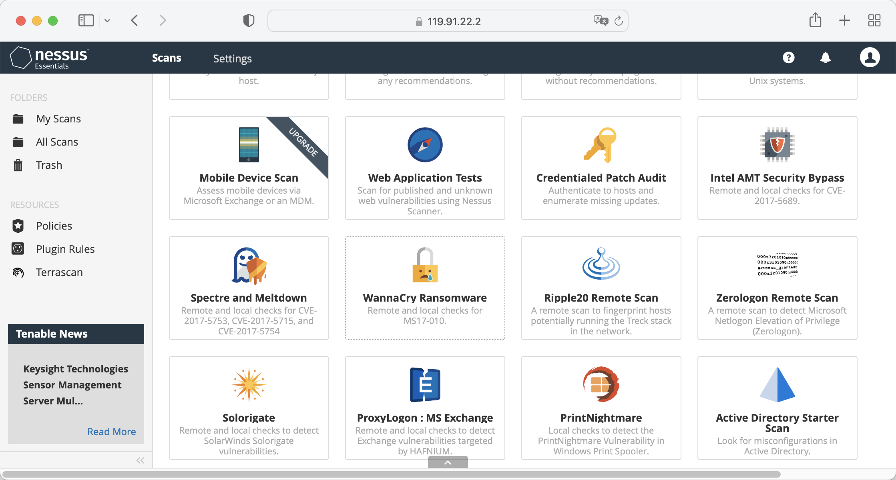
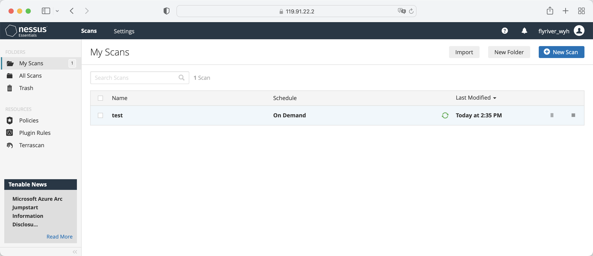
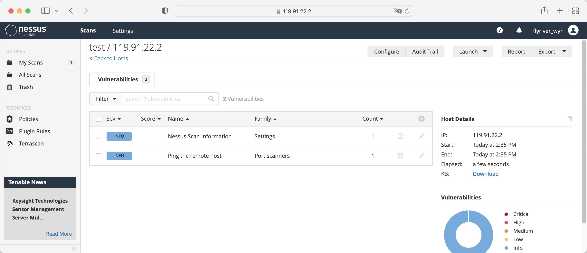

OpenCloudOS-系统安全配置
第一章 系统安全加固概览
1.1 什么是计算机系统安全
计算机安全是一个通用术语，涵盖了广泛的计算和信息处理领域。依赖计算机系统和网络进行日常业务交易和访问关键信息的行业将其数据视为其整体资产的重要组成部分。一些术语和指标已经进入了我们的日常业务词汇，例如总拥有成本（TCO）、投资回报率（ROI）和服务质量（QoS）。使用这些指标，行业可以计算数据完整性和高可用性（HA）等方面，作为其规划和流程管理成本的一部分。在电子商务等一些行业，数据的可用性和可信度可能意味着成功与失败的区别。
1.2 安全控制
计算机安全通常分为三个不同的主要类别： - 物理安全
-
逻辑安全
-
操作安全
1.2.1 物理安全
物理安全是在定义的结构中实施安全措施，用于阻止或防止未经授权访问敏感材料。物理安全的例子有： - 闭路监控摄像头
-
生物识别技术（包括指纹、语音、面部、虹膜、手写和其他用于识别个人的自动化方法）
-
报警系统
1.2.2 逻辑安全
技术安全使用技术作为基础，在整个物理结构和网络上控制敏感数据的访问和使用。技术控制范围深远，包括以下技术：
-
加密
-
密钥认证
-
访问控制列表
-
文件完整性审计
1.2.3 操作系统安全
操作安全定义了人为安全因素。它们涉及组织内各级人员，并通过以下方式确定哪些用户可以访问哪些资源和信息：
-
安全培训
-
备灾和恢复
1.3 安全性评估
给定充足的时间、资源和动力，黑客几乎可以闯入任何系统。目前可用的所有安全程序和技术都不能保证任何系统完全不受入侵。路由器有助于保护通往互联网的网关。防火墙有助于保护网络边缘。虚拟专用网络在加密流中安全地传递数据。入侵检测系统警告恶意活动。然而，每种技术的成功都取决于一些变量，包括：
-
负责配置、监控和维护技术的工作人员的专业知识
-
快速高效地修补和更新服务和内核的能力
-
管理员在网络上保持持续警惕的能力
第二章 系统加密策略
全系统加密策略是配置加密子系统的系统组件，涵盖TLS、IPSec、SSH、DNSec和Kerberos协议。该组件提供了一部分集成的加密策略，管理员可以进行选择。
2.1 系统范围的加密政策
当设置全系统策略时，opencloudos 中的应用程序会遵循安全策略，并拒绝使用不符合该策略的算法和协议，该策略适用于应用程序在使用系统提供的配置运行时的默认行为，但如果需要，可以进行覆盖。
要查看或更改当前的全系统加密策略，请使用加密策略工具，例如： 查看当前系统加密策略
[root@opencloudos ~]# update-crypto-policies --show
LEGACY
[root@opencloudos ~]# update-crypto-policies --set FUTURE
Setting system policy to FUTURE
Note: System-wide crypto policies are applied on application start-up.
It is recommended to restart the system for the change of policies
to fully take place.
[root@opencloudos ~]#reboot
2.2 在系统加密策略中排除部分应用程序
用户可以自定义应用程序使用的加密设置，最好是直接在应用程序中配置受支持的密码套件和协议，此外还可以从/etc/crypto-policies/back-ends目录中删除与应用程序相关的符号链接，并将其替换为自定义加密设置。
2.2.1 选择退出全系统加密策略的例子
- wget
要自定义wget网络下载器使用的加密设置，请使用--secure-protocol和--ciphers选项。例如：
[root@opencloudos ~]#wget --secure-protocol=TLSv1_1 --ciphers="SECURE128" https://example.com
- crul
要指定curl工具使用的密码，请使用--ciphers选项，并提供冒号分隔的密码列表作为值。例如：
[root@opencloudos ~]#curl https://example.com --ciphers '@SECLEVEL=0:DES-CBC3-SHA:RSA-DES-CBC3-SHA'
- update-crypto-policies(8) man page
2.3 自定义子加密策略
用户可以在现有的全系统加密策略之上应用自定义子策略，也可以从头开始定义此类策略。 /etc/crypto-policies/state/CURRENT.pol文件列出了当前应用的全系统加密策略中的所有设置。为了使加密策略更加严格，请考虑使用/usr/share/crypto-policies/policies/FUTURE.pol文件中列出的值。 配置过程如下
1.检查/etc/crypto-policies/policies/modules/目录
[root@opencloudos ~]#cd /etc/crypto-policies/policies/modules/
2.创建子策略文件
[root@opencloudos ~]# touch MYCRYPTO-1.pmod
[root@opencloudos ~]# touch SCOPES-AND-WILDCARDS.pmod
3.在上述文件中添加如下内容
[root@opencloudos ~]#vim MYCRYPTO-1.pmod
min_rsa_size = 3072
hash = SHA2-384 SHA2-512 SHA3-384 SHA3-512
[root@opencloudos ~]#vim SCOPES-AND-WILDCARDS.pmod
# Disable the AES-128 cipher, all modes
cipher = -AES-128-*
# Disable CHACHA20-POLY1305 for the TLS protocol (OpenSSL, GnuTLS, NSS, and OpenJDK)
cipher@TLS = -CHACHA20-POLY1305
# Allow using the FFDHE-1024 group with the SSH protocol (libssh and OpenSSH)
group@SSH = FFDHE-1024+
# Disable all CBC mode ciphers for the SSH protocol (libssh and OpenSSH)
cipher@SSH = -*-CBC
# Allow the AES-256-CBC cipher in applications using libssh
cipher@libssh = AES-256-CBC+
4.启用配置好的加密策略为DEFAULT等级
[root@opencloudos ~]#update-crypto-policies --set DEFAULT:MYCRYPTO-1:SCOPES-AND-WILDCARDS
5.重启使配置生效
[root@opencloudos ~]##reboot
6.验证是否生效
[root@opencloudos ~]# cat /etc/crypto-policies/state/CURRENT.pol | grep rsa_size
min_rsa_size = 3072
更多资料请参考 - Custom Policies in the update-crypto-policies(8) man page
- Crypto Policy Definition Format in the crypto-policies(7) man page
2.4 自定义系统加密策略
用户除了可以自定义子加密策略，还可以按照以下步骤自定义整个系统的加密策略。操作步骤如下:
1.在对应目录中创建策略文件
[root@opencloudos ~]##cd /etc/crypto-policies/policies/
[root@opencloudos ~]##touch MYPOLICY.pol
2.在策略文件中加入以下参数，或者复制一份系统预定义的一份参数为例
[root@opencloudos ~]##cp /usr/share/crypto-policies/policies/DEFAULT.pol /etc/crypto-policies/policies/MYPOLICY.pol
3.切换到自定义系统加密策略
[root@opencloudos ~]## update-crypto-policies --set MYPOLICY
4.重启生效
[root@opencloudos ~]##reboot
5.验证是否成功切换
[root@opencloudos ~]# update-crypto-policies --show
MYPOLICY
更多资料请参考 - Custom Policies in update-crypto-policies(8) man page
- Crypto Policy Definition Format in the crypto-policies(7) man page
第三章 共享系统认证
共享系统证书使NSS、GNUTLS、OpenSSL和Java能够共享默认源，以检索系统证书锚点和块列表信息。默认情况下，信任存储包含Mozilla CA列表，包括正负信任。该系统允许更新核心Mozilla CA列表或选择其他证书列表。
3.1 证书存储
在opencloudos中，合并的系统认证位于/etc/pki/ca-trust/和/usr/share/pki/ca-trust-source/目录中, /usr/share/pki/ca-trust-source/中的信任设置优先级低于/etc/pki/ca-trust/中的设置。 证书文件安装到以下目录的子目录中：
- 信任锚点
/usr/share/pki/ca-trust-source/anchors/ 或 /etc/pki/ca-trust/source/anchors/
- 不信任证书
/usr/share/pki/ca-trust-source/blacklist/ 或 /etc/pki/ca-trust/source/blacklist/
- 对于扩展的BEGIN TRUSTED文件格式的证书
/usr/share/pki/ca-trust-source/ 或 /etc/pki/ca-trust/source/
3.2 添加新的认证
要使用新的信任源来确认系统上的应用程序，请将相应的证书添加到系统证书存储位置，并使用update-ca-trust命令更新。流程如下:
1.安装ca-certificates
[root@opencloudos ~]##yum install ca-certificates
2.将证书文件复制到/usr/share/pki/ca-trust-source/anchors/或/etc/pki/ca- trust/source/anchors/目录
[root@opencloudos ~]##cp ~/certificate-trust-examples/Cert-trust-test-ca.pem /usr/share/pki/ca-trust- source/anchors/
3.更新系统认证信息
[root@opencloudos ~]## update-ca-trust
3.3 管理已信任证书
trust命令提供了一种很方便的方式用于管理系统证书 trust用于列出、提取、添加、删除或更改信任锚点。要查看此命令的内置帮助，请在没有任何参数或使用--help指令
[root@opencloudos ~]# trust
usage: trust command <args>...
Common trust commands are:
list List trust or certificates
extract Extract certificates and trust
extract-compat Extract trust compatibility bundles
anchor Add, remove, change trust anchors
dump Dump trust objects in internal format
See 'trust <command> --help' for more information
- 列出所有系统信任锚点和证书
[root@opencloudos ~]# trust list
pkcs11:id=%12%C8%6D%75%89%62%89%3C%3E%A2%92%F7%8C%79%A1%42%F7%8D%A4%AE;type=cert
type: certificate
label: Tencent tlinux Root
trust: anchor
category: authority
pkcs11:id=%D2%87%B4%E3%DF%37%27%93%55%F6%56%EA%81%E5%36%CC%8C%1E%3F%BD;type=cert
type: certificate
label: ACCVRAIZ1
trust: anchor
category: authority
pkcs11:id=%F7%7D%C5%FD%C4%E8%9A%1B%77%64%A7%F5%1D%A0%CC%BF%87%60%9A%6D;type=cert
type: certificate
label: AC RAIZ FNMT-RCM
trust: anchor
category: authority
......
- 保存一个信任锚点到系统信任列表中，使用trust anchor命令并指定证书的路径。将path.to/certificate.crt替换为证书及其文件名的路径：
[root@opencloudos ~]##trust anchor path.to/certificate.crt
- 根据证书ID或路径删除证书
[root@opencloudos ~]## trust anchor --remove path.to/certificate.crt
[root@opencloudos ~]## trust anchor --remove "pkcs11:id=%AA%BB%CC%DD%EE;type=cert"
- trust的所有子命令都提供了详细的内置帮助,如
[root@opencloudos ~]# trust list --help
usage: trust list --filter=<what>
--filter=<what> filter of what to export
ca-anchors certificate anchors
blacklist blacklisted certificates
trust-policy anchors and blacklist (default)
certificates all certificates
pkcs11:object=xx a PKCS#11 URI
--purpose=<usage> limit to certificates usable for the purpose
server-auth for authenticating servers
client-auth for authenticating clients
email for email protection
code-signing for authenticating signed code
1.2.3.4.5... an arbitrary object id
-v, --verbose show verbose debug output
-q, --quiet suppress command output
更多资料请参考： - update-ca-trust(8) , trust(1) man pages
第四章 漏洞及配置合规性扫描
合规性审计是确定给定对象是否遵循合规性策略中规定的所有规则的过程。合规性策略由安全专业人员定义，他们通常以清单的形式指定计算环境应使用的必要设置。合规政策可能因组织而异，甚至因同一组织内的不同系统而异。这些政策之间的差异基于每个系统的宗旨及其对组织的重要性。自定义软件设置和部署特性也增加了对自定义策略清单的需求。
4.1 配置合规工具
OpencloudOS提供工具，使用户能够执行完全自动化的合规性审计。这些工具基于自动化协议（SCAP）标准，旨在自动定制合规策略。 - SCAP Workbench - Scap-workbench程序旨在对单个本地或远程系统执行配置和漏洞扫描。还可以使用它根据这些扫描和评估生成安全报告。
-
OpenSCAP - OpenSCAP库以及随附的oscap命令行实用程序，旨在对本地系统执行配置和漏洞扫描，验证配置合规性内容，并根据这些扫描和评估生成报告和指南。
-
SCAP Security Guide (SSG) - scap-security-guide软件包为Linux系统提供了最新的安全策略集合。该指南包括一份实用的强化建议目录。该项目弥合了普遍政策要求和具体实施指南之间的差距。
-
Script Check Engine (SCE) - SCE是SCAP协议的扩展，使管理员能够使用脚本语言（如Bash、Python和Ruby）编写安全内容。SCE扩展在openscap-engine-sce软件包中提供。SCE本身不是SCAP标准的一部分。
更多资料请参考： - oscap(8), scap-workbench(8), scap-security-guide(8) man pages
4.2 漏洞扫描
推荐使用tenable进行系统漏洞扫描。 - 安装Nessus,在下面链接中下载Nessus安装包
https://www.tenable.com/downloads/nessus?loginAttempted=true
[root@opencloudos ~]#yum install Nessus-10.3.0-es8.x86_64.rpm
Last metadata expiration check: 15:28:22 ago on Wed 10 Aug 2022 07:47:14 PM CST.
Package Nessus-10.3.0-es8.x86_64 is already installed.
Dependencies resolved.
Nothing to do.
Complete!
- 启动服务
[root@opencloudos ~]#systemctl start nessusd.service
[root@opencloudos ~]# systemctl status nessusd.service
● nessusd.service - The Nessus Vulnerability Scanner
Loaded: loaded (/usr/lib/systemd/system/nessusd.service; enabled; vendor preset: disabled)
Active: active (running) since Thu 2022-08-11 12:17:33 CST; 3min 23s ago
Main PID: 1196 (nessus-service)
-
登录tenable nessus

-
创建扫描策略 
-
启动漏洞扫描 
-
查看结果 
第五章 完整性检查
高级入侵检测环境（AIDE）是一个实用程序，用于在系统上创建文件数据库，然后使用该数据库来确保文件完整性并检测系统入侵。
5.1 安装AIDE
1.安装aide
[root@opencloudos mapper]#yum install aide
[root@opencloudos ~]# aide --init
Start timestamp: 2022-08-15 15:57:08 +0800 (AIDE 0.16)
AIDE initialized database at /var/lib/aide/aide.db.new.gz
Number of entries: 273651
---------------------------------------------------
The attributes of the (uncompressed) database(s):
---------------------------------------------------
/var/lib/aide/aide.db.new.gz
MD5 : gbDTEpIcp2U9/d0Lr+IyhA==
SHA1 : cbzG7XCK7LKFgQrYTg9BGjLhOZo=
RMD160 : qfOqQ/acSRhD7ezUQNYZixCG/DI=
TIGER : hTR0EWinckydttRnf47yWa2DDEzjKmra
SHA256 : U9mcgPLyS4i82uC9RG3+6Qq05OLSkWra
M/rXzo5UEoQ=
SHA512 : bZ9rZKj2FfUd4UH5afgt2TOtdGc6vZIF
4nXgwrwZrmd4HtE93W1kmwxClF99ueBm
EhNQQRG5yb07vL/IEkl1Ig==
End timestamp: 2022-08-15 16:32:44 +0800 (run time: 35m 36s)
在默认配置中，aide --init命令仅检查/etc/aide.conf文件中定义的一组目录和文件。要在AIDE数据库中包含其他目录或文件，并更改其观看参数，请相应编辑/etc/aide.conf
3.开始使用数据库，从初始数据库文件中删除.new包
[root@opencloudos ~]# mv /var/lib/aide/aide.db.new.gz /var/lib/aide/aide.db.gz
要修改 AIDE 数据库的位置，请编辑 /etc/aide.conf 文件并修改 DBDIR 值。要获得额外的安全性，请将数据库、配置和 /usr/sbin/aide 二进制文件存储在安全的位置，如只读介质。
5.2 使用 AIDE 执行完整性检查
[root@opencloudos ~]# aide --check
Start timestamp: 2022-08-22 01:15:48 +0000 (AIDE 0.16)
AIDE found differences between database and filesystem!!
Summary:
Total number of entries: 74891
Added entries: 0
Removed entries: 0
Changed entries: 5
---------------------------------------------------
Changed entries:
---------------------------------------------------
f ... .C.. : /usr/local/qcloud/YunJing/log/hids.log
f ... .C.. : /usr/local/qcloud/YunJing/log/ydservice.20220822.log
f ... .C.. : /usr/local/qcloud/monitor/barad/log/dispatcher.log
f ... .C.. : /usr/local/qcloud/monitor/barad/log/executor.log
f ... .C.. : /usr/local/qcloud/stargate/logs/stargate.log
...
5.3 更新AIDE数据库
[root@opencloudos mapper]#aide --update
更多资料请参考： - aide（1）manual page
第六章 块设备加密
磁盘加密通过加密来保护块设备上的数据。要访问设备的解密内容，用户必须提供密码或密钥作为身份验证。当涉及到移动计算机和可移动媒体时，这一点尤为重要：即使设备已从系统中物理移除，它也有助于保护设备的内容。LUKS格式是opencloudos 中块设备加密的默认实现。
6.1 LUKS
Linux Unified Key Setup-disk-format(LUKS)（LUKS）能够加密块设备，并提供了一套简化加密设备管理的工具。LUKS允许多个用户密钥解密主密钥，该主密钥用于分区的批量加密。opencloudos 使用LUKS执行块设备加密。默认情况下，在安装期间未选中加密块设备的选项。如果用户选择加密磁盘，系统会在每次启动计算机时都会提示输入密码。此密码“解锁”解密分区的批量加密密钥。如果用户选择修改默认分区表，则可以选择要加密的分区。
LUKS功能简介：
- LUKS对整个块设备进行加密，因此非常适合保护移动设备的内容，如可移动存储介质或笔记本电脑磁盘驱动器。
-
LUKS提供密码增强，防止字典攻击。
-
LUKS设备包含多个密钥插槽，允许用户添加备份密钥或密码。
-
像LUKS这样的磁盘加密解决方案仅在系统关闭时保护数据。一旦系统打开并且LUKS解密了磁盘，该磁盘上的文件可供任何访问这些文件的人使用。
-
LUKS不适合需要文件级加密的应用程序。
LUKS默认使用的加密算法为aes-xts-plain64，LUKS的默认密钥大小为512位。具有Anaconda（XTS模式）的LUKS的默认密钥大小为512位。 更多资料请参考： - LUKS主页：https://gitlab.com/cryptsetup/cryptsetup/blob/master/README.md
- LUKS On-Disk Format 规格：https://gitlab.com/cryptsetup/LUKS2-docs/blob/master/luks2_doc_wip.pdf
6.2 使用LUKS加密块设备现有数据
本节使用LUKS2加密尚未被加密设备上的数据。LUKS标头存储在设备头部。执行加密步骤之前请确保数据已备份且磁盘已存在文件系统。
1.以vdb1分区为例，卸载该分区
[root@opencloudos mapper]#umount /dev/vdb1
[root@opencloudos mapper]#yum install cryptsetup
[root@opencloudos mapper]#cryptsetup reencrypt --encrypt --init-only --reduce-device-size 32M /dev/vdb1 vdb1_encrypted
Last metadata expiration check: 15:28:22 ago on Wed 10 Aug 2022 07:47:14 PM CST.
Package Nessus-10.3.0-es8.x86_64 is already installed.
Dependencies resolved.
Nothing to do.
Complete!
6.3 使用分离标头的 LUKS2 加密现有数据
本节使用LUKS2加密尚未被加密设备上的数据。LUKS标头存储在指定位置。执行加密步骤之前请确保数据已备份且磁盘已存在文件系统。 1.以vdb1分区为例，卸载该分区
[root@opencloudos mapper]#umount /dev/vdb1
[root@opencloudos mapper]#yum install cryptsetup
[root@opencloudos mapper] #cryptsetup reencrypt --encrypt --init-only --header /path/to/header /dev/vdb1 vdb1_encrypted
上述命令中vdb1_encrypted为映射文件的名称，可用户自定义。使用cryptsetup对分区进行了加密后，这个分区就不再允许直接挂载。LUKS也是一种基于device mapper 机制的加密方案。如果要使用这个分区，必须对这个分区做一个映射，映射到/dev/mapper这个目录里去，只能挂载这个映射才能使用。然而做映射的时候需要输入解密密码。
[root@opencloudos mapper]# cryptsetup reencrypt --encrypt --init-only --header /data/header /dev/vdb1 vdb1_encrypted
WARNING!
========
Detected LUKS device on /dev/vdb1. Do you want to encrypt that LUKS device again?
Are you sure? (Type 'yes' in capital letters): YES
WARNING!
========
Header file does not exist, do you want to create it?
Are you sure? (Type 'yes' in capital letters): YES
Enter passphrase for /data/header:
Verify passphrase:
/dev/mapper/vdb1_encrypted is now active and ready for online encryption.
更多资料请参考： - cryptsetup（8）
6.4 LUKS2加密空白块设备
1.将分区设置为加密的 LUKS 分区：
[root@opencloudos mapper]#cryptsetup luksFormat /dev/vdb1
[root@opencloudos mapper]#cryptsetup open /dev/vdb1 vdb1_encrypted
[root@opencloudos mapper]#mkfs -t ext4 /dev/mapper/vdb1_encrypted
[root@opencloudos mapper]#mkfs.ext4 /dev/mapper/vdb1_encrypted
[root@opencloudos mapper]#mount /dev/mapper/vdb1_encrypted mount-point
第七章 审计系统
Linux审计系统用于统计系统中出现的安全策略违规记录，继而通过SELINUX进一步处理这些违规。审计系统对于生产环境而言至关重要，可以确定安全策略的违规者以及其所执行的操作。 审计系统可以统计以下信息： - 违规事件的时间、类型和结果
-
对象的敏感度
-
违规事件与触发时间的用户身份的关联
-
根据用户身份、主题和对象标签以及其他属性包含或排除事件
-
对受信任数据库的修改，如/etc/passwd
-
身份验证机制的使用，如SSH
除此以外，审计系统还可以 - 监控文件访问
审计可以跟踪文件或目录是否已被访问、修改、执行或文件属性是否已被改变。例如检测对重要文件的访问，并在其中一个文件损坏时提供审计跟踪。
- 监控系统调用
可将审计配置为在每次使用特定系统调用时生成日志条目。例如，可用于通过监控 settimeofday、clock_adjtime 和其他与时间相关的系统调用来跟踪对系统时间的修改。 - 记录用户的操作
审计系统可以跟踪文件是否已被执行，因此可以定义一个规则以记录每次特定命令的执行。例如，可以对 /bin 目录中的每个可执行文件定义一个规则。然后，可以按用户 ID 搜索生成的日志条目，以生成每个用户所执行的命令的审计跟踪。
- 记录安全事件
pam_faillock 认证模块能够记录失败的登录尝试。也可以将审计设置为记录失败的登录尝试，并提供试图登录的用户的额外信息。
- 搜索事件
ausearch工具可以过滤日志条目，并根据多个条件提供完整的审计跟踪。 - 运行总结报告
aureport程序可以用于生成记录事件的日常报告等。管理员可以根据报告进一步调查可疑活动。 - 监控网络访问
iptables和ebtables工具可以配置为触发审计事件，使系统管理员能够监控网络访问
根据收集的信息量，审计系统会对系统性能造成一定的影响
7.1 审计系统架构
审计系统包括用户态程序以及内核空间系统调用两部分，内核组件接受用户空间应用程序的系统调用，并通过user、task、fstype或exit进行过滤。 用户空间审计守护进程从内核收集信息，并在日志文件中创建条目。其他用户空间工具与审计守护进程、内核审计组件或审计日志文件进行交互： - auditctl - 审计控制工具, 管理规则并控制事件进程的许多设置和参数。
- 其他相关工具根据审计日志文件作为输入，并根据用户的要求生成输出。例如aureport生成所有事件的报告。
7.2 auditd配置参数说明
默认的audit配置足以适合于大多数环境，不过可以根据安全需要进一步配置audit，相关配置在/etc/audit/audit.conf文件中。部分常用的参数说明如下 - log_file
该参数指定审计日志存放的目录，通常在/var/log/audit/目录下。 - max_log_file
指定最大日志文件的大小。 - max_log_file_action
指定日志大小达到max_log_file时所需要采取的动作，为防止审计日志被覆盖，通常该值设置为keep_logs。 - space_left
指定磁盘上剩余的可用空间量，其是space_left_action参数中设置的触发时所采取的操作。必须设置一个数字，让管理员有足够的时间来响应，并释放磁盘空间。space_left 的值取决于审计日志文件的生成速度。 - space_left_action
建议将 space_left_action 参数设置为 email 或 使用适当通知方法的 exec。 - admin_space_left
指定绝对最小可用空间量，其是 admin_space_left_action 参数中设置的触发时所采取的操作，必须设置一个值，为记录管理员所执行的操作保留足够的空间。 - admin_space_left_action
应设置为 single 来将系统置于单用户模式，并允许管理员释放一些磁盘空间。 - disk_full_action
指定当保存审计日志文件的分区上没有可用空间时触发的操作，必须设置为 halt 或 single。当审计无法记录事件时，这可确保系统关闭或以单用户模式运行。 - disk_error_action
指定当在包含审计日志文件的分区上检测到错误时触发的操作，必须设置为 syslog、single 或halt，具体取决于您处理硬件故障的本地安全策略。 - flush
应设置为 incremental_async。它与 freq 参数相结合，该参数决定了在强制与硬盘进行硬盘同步前可以将多少条记录发送到磁盘。freq 参数应设置为100。这些参数可确保审计事件数据与磁盘上的日志文件同步，同时保持良好的活动性能。 其余配置选项应根据本地安全策略来设置。
7.3 启动和配置auditd
auditd相关操作如表所示：
| 功能 | 指令操作 |
|---|---|
| 以root身份启动autid | #service auditd start |
| 将auditd配置为开机自启 | #systemctl start auditd |
| 临时禁用auditd | #auditctl -e 0 |
| 重新启用auditd | #auditctl -e 1 |
| 重新启动auditd | #service audited restart |
| 停止auditd | #service auditd stop |
| 重新加载 /etc/audit/auditd.conf 文件中 auditd 的配置 | #service auditd reload |
| 轮转 /var/log/audit/ 目录中的日志文件 | #service auditd rotate |
| 显示 auditd 的运行状态 | #service auditd status |
7.4 查看审计日志文件
审计系统通常将日志条目存储于/var/log/audit/audit.log文件中，如果启用了日志轮转，则轮转的 audit.log 文件也在存储同一个目录中。添加以下审计规则，来记录读取或修改 /etc/ssh/sshd_config 文件的每次尝试
[root@opencloudos ~]#auditctl -w /etc/ssh/sshd_config -p warx -k sshd_config
[root@opencloudos ~]# cat /etc/ssh/sshd_config
# $OpenBSD: sshd_config,v 1.103 2018/04/09 20:41:22 tj Exp $
# This is the sshd server system-wide configuration file. See
# sshd_config(5) for more information.
...
#Port 22
#AddressFamily any
#ListenAddress 0.0.0.0
#ListenAddress ::
HostKey /etc/ssh/ssh_host_rsa_key
HostKey /etc/ssh/ssh_host_ecdsa_key
HostKey /etc/ssh/ssh_host_ed25519_key
...
7.5 定义和执行审计规则
审计系统根据一组规则进行操作，这些规则定义日志文件中所捕获的内容。使用 auditctl 工具，可以在命令行或 /etc/audit/rules.d/ 目录中设置审计规则。
1.要定义一条规则，记录对 /etc/passwd 文件的所有写访问和每个属性的修改：
[root@opencloudos ~]#auditctl -w /etc/passwd -p wa -k passwd_changes
[root@opencloudos ~]#auditctl -w /etc/selinux/ -p wa -k selinux_changes
系统调用规则示例
1.要定义一条规则，当程序每次使用 adjtimex 或 settimeofday 系统调用时就创建一条日志，系统使用 64 位构架
[root@opencloudos ~]# auditctl -a always,exit -F arch=b64 -S adjtimex -S settimeofday -k time_change
2.定义一条规则，在 ID 为 1000 或以上的系统用户每次删除或重命名文件时创建一条日志
[root@opencloudos ~]# auditctl -a always,exit -S unlink -S unlinkat -S rename -S renameat -F auid>=1000 -F auid!=4294967295 -k delete
可执行文件规则
要定义一条规则，记录所有 /bin/id 程序的执行，请执行以下命令
[root@opencloudos ~]# auditctl -a always,exit -F exe=/bin/id -F arch=b64 -S execve -k execution_bin_id
更多资料请查看： - auditctl(8) manual page
7.6 定义和执行审计规则
要定义在重启过程中保持不变的审计规则，必须直接将其包含在 /etc/audit/rules.d/audit.rules 文件中，或者使用augenrules 程序读取位于/etc/audit/rules.d/ 目录中的规则。请注意，每次 auditd 服务启动时都会生成 /etc/audit/audit.rules 文件。/etc/audit/rules.d/ 中的文件使用相同的 auditctl 命令行语法来指定规则。哈希符号(#)后面的空行和文本将被忽略。另外，管理员可以使用 auditctl 命令从用 -R 选项指定的文件中读取规则，例如：
[root@opencloudos ~]#auditctl -R /usr/share/audit/sample-rules/30-stig.rules
7.7 使用预配置的规则文件
在 /usr/share/audit/sample-rules 目录中，audit 软件包根据各种认证标准提供了一组预配置的规则文件：
[root@opencloudos ~]#cat /usr/share/audit/sample-rules
[root@opencloudos ~]# cd /usr/share/audit/sample-rules/
[root@opencloudos ~]# cp 10-base-config.rules 30-stig.rules 31-privileged.rules 99-finalize.rules /etc/audit/rules.d/
[root@opencloudos ~]# augenrules --load
7.8 使用 augenrules 来定义持久性规则
augenrules脚本读取位于/etc/audit/rules.d/目录下的规则，并将它们编译成audit.rures文件。这个脚本会根据文件的自然排列顺序，按特定顺序处理以 .rules 结尾的所有文件。这个目录中的文件被组织到具有如下含义的组中： - 10 - 内核和 auditctl 配置
-
20 - 可与常规规则匹配但您希望不同匹配的规则
-
30 - 主规则
-
40 - 可选规则
-
50 - 特定于服务器的规则
-
70 - 系统本地规则
-
90 - 定稿（不可变）
规则并非是一次全部使用。它们是策略的一部分，应仔细考虑，并将单个文件复制到 /etc/audit/rules.d/。例如，要在 STIG 配置中设置系统，请复制规则 10-base-config、30-stig、31-privileged 和 99-finalize。在 /etc/audit/rules.d/ 目录中有了规则之后，运行带有 --load 参数的 augenrules 脚本来加载它们：
[root@opencloudos ~]# augenrules --load
/usr/sbin/augenrules: No change
No rules
enabled 0
failure 1
pid 0
rate_limit 0
...
7.9 禁用 augenrules
使用以下步骤来禁用 augenrules 工具。这会将审计切换为使用 /etc/audit/audit.rules 文件中定义的规则。操作步骤如下:
1.将 /usr/lib/systemd/system/auditd.service 文件复制到 /etc/systemd/system/ 目录中
[root@opencloudos ~]# cp -f /usr/lib/systemd/system/auditd.service /etc/systemd/system/
[root@opencloudos ~]# vi /etc/systemd/system/auditd.service
3.注释掉包含 augenrules 的行，将包含 auditctl -R 命令的行取消注释
#ExecStartPost=-/sbin/augenrules --load ExecStartPost=-/sbin/auditctl -R /etc/audit/audit.rules
[root@opencloudos ~]# systemctl daemon-reload
[root@opencloudos ~]#service auditd restart
7.10 设置审计策略监控软件更新
在opencloudos 3中，用户可以使用预配置的规则配置，以监控如下软件包管理器：
dnf,yum,pip,npm,cpan,gem,luarocks
[root@opencloudos ~]#cp /usr/share/audit/sample-rules/44-installers.rules /etc/audit/rules.d/
-a always,exit -F perm=x -F path=/usr/bin/dnf-3 -F key=software-installer
-a always,exit -F perm=x -F path=/usr/bin/yum -F
[root@opencloudos ~]#augenrules --load
[root@opencloudos ~]# auditctl -l
5.在审计日志中搜索最近的安装事件，例如：
[root@opencloudos ~]# ausearch -ts recent -k software-installer
7.11 使用审计系统监控用户登录时间
要监控特定时间哪个用户登录了，管理员不需要以任何特殊的方式配置审计。可以使用 ausearch 或 aureport 工具，它们提供不同的方法来展示相同的信息。配置步骤如下
1.在审计日志中搜索 USER_LOGIN 消息类型
[root@opencloudos ~]#ausearch -m USER_LOGIN -ts '7/02/2022' '18:00:00' -sv no
time->Sat Jul 30 01:31:50 2022
type=USER_LOGIN msg=audit(1659115910.191:272434): pid=1416645 uid=0 auid=4294967295 ses=4294967295 msg='op=login acct="root" exe="/usr/sbin/sshd" hostname=? addr=1.235.57.39 terminal=ssh res=failed'
参数说明： -ts: 选项指定日期和时间。如果不使用这个选项，ausearch 将提供从当天开始的结果。 -sv yes 选项用于过滤登录成功的记录。 -sv no 选项用于过滤登录失败的记录。
2.将 ausearch 命令的原始输出传送给 aulast 工具，它以类似于 last 命令的输出格式显示输出。例如：
[root@opencloudos audit]# ausearch --raw | aulast --stdin
root pts/0 118.112.73.86 Sat Jul 30 18:00 - 20:30 (02:29)
root pts/0 118.112.75.157 Sun Jul 31 16:21 - 16:21 (00:00)
root pts/0 118.112.75.157 Sun Jul 31 16:23 - 17:08 (00:45)
root pts/0 118.112.73.104 Mon Aug 1 10:55 - 10:55 (00:00)
root ssh 114.132.79.10 Mon Aug 1 14:19 - 14:22 (00:02)
root pts/0 118.112.73.104 Mon Aug 1 11:56 - 14:22 (02:26)
root ssh 114.132.79.10 Mon Aug 1 14:22 - 16:41 (02:19)
root ssh 114.132.79.10 Mon Aug 1 18:34 - 18:48 (00:14)
root pts/0 118.112.73.104 Mon Aug 1 20:06 - 23:19 (03:12)
root pts/0 118.112.72.152 Tue Aug 2 10:15 still logged in
3.使用 aureport 命令及 --login -i 选项来显示登录事件列表。
[root@opencloudos audit]# aureport --login -i
...
7219. 07/31/2022 23:30:39 root 183.131.3.30 ssh /usr/sbin/sshd no 294225
7220. 07/31/2022 23:30:41 root 183.131.3.30 ssh /usr/sbin/sshd no 294237
7221. 07/31/2022 23:30:45 root 183.131.3.30 ssh /usr/sbin/sshd no 294249
7222. 07/31/2022 23:30:49 root 183.131.3.30 ssh /usr/sbin/sshd no 294261
7223. 07/31/2022 23:30:53 root 183.131.3.30 ssh /usr/sbin/sshd no 294273
7224. 07/31/2022 23:30:56 root 183.131.3.30 ssh /usr/sbin/sshd no 294285
7225. 07/31/2022 23:30:58 root 183.131.3.30 ssh /usr/sbin/sshd no 294297
7226. 07/31/2022 23:31:02 root 183.131.3.30 ssh /usr/sbin/sshd no 294309
7227. 07/31/2022 23:31:04 root 183.131.3.30 ssh /usr/sbin/sshd no 294321
7228. 07/31/2022 23:31:06 root 183.131.3.30 ssh /usr/sbin/sshd no 294333
7229. 07/31/2022 23:31:08 root 183.131.3.30 ssh /usr/sbin/sshd no 294345
7230. 07/31/2022 23:31:12 root 183.131.3.30 ssh /usr/sbin/sshd no 294357
...
更多资料请参考： - ausearch(8) manual pages.
-
aulast(8) manual pages.
-
aureport(8) manual pages.
第八章 USBGuard抵御来自USB设备的攻击
系统挂载USB设备可能会收到攻击，系统管理员可以使用USBGuard抵御此类攻击。
8.1 什么是USBGuard
借助 USBGuard 软件框架，您可以根据内核中的 USB 设备授权功能，使用允许和禁止设备的基本列表来防止系统免受入侵 USB 设备的攻击。 USB Guard框架提供一下组件： - 带有用于动态交互和策略实施的进程间通信(IPC)接口的系统服务组件
-
与正在运行的 usbguard 系统服务交互的命令行接口
-
编写 USB 设备授权策略的规则语言
-
用于与共享库中实施的系统服务组件交互的 C++ API usbguard系统服务配置文件（/etc/usbguard/usbguard-daemon.conf）包括授权用户和组使用 IPC 接口的选项。
8.2 安装USBGuard
通过以下流程安装并启动USBGuard框架。 1.安装usbgurd
[root@opencloudos ~]#yum install usbguard
[root@opencloudos ~]#usbguard generate-policy > /etc/usbguard/rules.conf
[root@opencloudos ~]# systemctl enable --now usbguard
[root@opencloudos ~]# systemctl status usbguard
● usbguard.service - USBGuard daemon
Loaded: loaded (/usr/lib/systemd/system/usbguard.service; enabled; vendor preset: disabled)
Active: active (running) since Sun 2022-08-21 15:41:35 UTC; 3min 11s ago
Docs: man:usbguard-daemon(8)
Process: 540366 ExecStart=/usr/sbin/usbguard-daemon -f -s -c /etc/usbguard/usbguard-daemon.co>
Main PID: 540389 (usbguard-daemon)
Tasks: 3 (limit: 22674)
Memory: 1.4M
CGroup: /system.slice/usbguard.service
└─540389 /usr/sbin/usbguard-daemon -f -s -c /etc/usbguard/usbguard-daemon.conf
[root@opencloudos ~]# usbguard list-devices
2: allow id 1d6b:0001 serial "0000:00:01.2" name "UHCI Host Controller" hash "FRDEjz7OhdJbNjmJ8zityiNX/LuO+ovKC07I0bOFjao=" parent-hash "9+Zsfvo9IR/AEQ/Fn4mzdoPGk0rqpjku6uErfS09K4c=" via-port "usb1" with-interface 09:00:00 with-connect-type ""
更多资料请参考： - usbguard(1) 和usbguadr-daemod.conf(5)
8.3 阻止和授权 USB 设备
- 临时阻止和授权USB设备 此流程概述了如何使用 usbguard 命令授权和阻止 USB 设备。 1.列出识别的USB设备
[root@opencloudos ~]# usbguard list-devices
[root@opencloudos ~]# usbguard allow-device 6
3.取消授权并删除设备6
[root@opencloudos ~]# usbguard reject-device 6
- 永久阻止和授权USB设备 1.配置SELINUX，允许usbguard守护进程编写规则
显示与usbguard相关的semanage布尔值
[root@opencloudos ~]# semanage boolean -l | grep usbguard
usbguard_daemon_write_conf (off , off) Allow usbguard to daemon write conf
usbguard_daemon_write_rules (on , on) Allow usbguard to daemon write rules
如果 usbguard_daemon_write_rules 布尔值已关闭，将其打开:
[root@opencloudos ~]#semanage boolean -m --on usbguard_daemon_write_rules
[root@opencloudos ~]# usbguard list-devices
[root@opencloudos ~]# usbguard allow-device 6 -p
4.取消授权并删除设备6
[root@opencloudos ~]# usbguard reject-device 6 -p
5.永久取消授权并保留设备 6
[root@opencloudos ~]# usbguard block-device 6 -p
- 验证规则是否修改
[root@opencloudos ~]# usbguard list-rules
8.4 创建自定义策略
1.创建一个策略，其授权当前连接的 USB 设备，并将生成的规则保存到 rules.conf 文件中：
[root@opencloudos ~]# usbguard generate-policy --no-hashes > ./rules.conf
[root@opencloudos ~]# vim ./rules.conf
3.根据需要添加、删除或编辑规则。例如，以下规则只允许带有一个大容量存储接口的设备与系统进行交互：
[root@opencloudos ~]# allow with-interface equals { 08:*:* }
[root@opencloudos ~]# install -m 0600 -o root -g root rules.conf /etc/usbguard/rules.conf
[root@opencloudos ~]# systemctl restart usbguard
[root@opencloudos ~]# usbguard list-rules
8.5 授权用户和组使用 USBGuard IPC 接口
使用该流程授权特定用户或组使用 USBGuard 公共 IPC 接口。默认情况下，只有 root 用户可以使用此接口。流程如下：
1.确认/etc/usbguard/rules.conf 文件包含了由usbguard generate-policy 命令生成的初始规则集。
2.编辑/etc/usbguard/usbguard-daemon.conf文件添加一行规则，允许 xxx 组中的所有用户使用 IPC 接口，并保存文件
[root@opencloudos ~]# vim /etc/usbguard/usbguard-daemon.conf
...
# Hides personally identifiable information such as device serial numbers and
# hashes of descriptors (which include the serial number) from audit entries.
#
#HidePII=false
IPCAllowGroups=xxx
3.重启usbguard守护进程使配置生效
[root@opencloudos ~]# systemctl restart usbguard
8.6 将USBguard授权事件记录到Linux审计日志中
使用以下步骤将 USBguard 授权事件记录集成到标准的 Linux 审计日志中。默认情况下，usbguard 守护进程将事件记录到 /var/log/usbguard/usbguard-audit.log 文件中。 1.编辑 /etc/usbguard/usbguard-daemon.conf，将AuditBackend 选项从 FileAudit 改为 LinuxAudit
[root@opencloudos ~]#vim /etc/usbguard/usbguard-daemon.conf
# USBGuard Audit events log backend
#
# One of:
#
# * FileAudit - Log audit events into a file specified by
# AuditFilePath setting (see below)
# * LinuxAudit - Log audit events using the Linux Audit
# subsystem (using audit_log_user_message)
#
AuditBackend=LinuxAudit
2.重启usbguard 守护进程
[root@opencloudos ~]# systemctl restart usbguard
3.验证
[root@opencloudos ~]# ausearch -ts recent -m USER_DEVICE
第九章 SELINUX配置
SELinux（Security Enhanced Linux）提供了一个额外的系统安全层。SELinux 从根本上回答了问题：
9.1 什么是SELINUX
SELinux 是一个内置在 Linux 内核中的 Linux 安全模块（LSM）。内核中的 SELinux 子系统由安全策略驱动，该策略由管理员控制并在引导时载入。系统中所有与安全性相关的、内核级别的访问操作都会被 SELinux 截取，并在加载的安全策略上下文中检查。如果载入的策略允许操作，它将继续进行。否则,操作会被阻断，进程会收到一个错误。
SELinux实施强制访问控制(MAC)。每个进程和系统资源都有一个特殊的安全性标签,称为 SELinux 标签，它是一个提取系统级别细节并专注于实体的安全属性的标识符。这不仅提供了在 SELinux 策略中引用对象的一个一致方法，而且消除了在其他身份识别系统中可能存在的模糊性。例如，某个文件可以在使用绑定挂载的系统中有多个有效的路径名称。SELinux 标签定义进程如何相互交互以及与各种系统资源进行交互。默认情况下不允许任何交互,除非规则明确授予了相应的权限。
SELinux 标签包括以下字段： user（用户）、role（角色）、type（类型）和 security level（安全级别）。
SELinux 决策（如允许或禁止访问）会被缓存。这个缓存被称为 Access Vector Cache（AVC）。通过使用这些缓存的决定，可以较少对 SELinux 策略规则的检查，这会提高性能。如果 DAC 规则已首先拒绝了访问，则 SELinux 策略规则无效。原始审计消息记录到 /var/log/audit/audit.log 中，以 type=AVC 字符串开头。
在 opencloudos 中，系统服务由 systemd 守护进程控制；systemd 启动和停止所有服务，用户和进程使用 systemctl 实用程序与 systemd 通信。systemd 守护进程可以参考 SELinux 策略，检查调用进程的标签以及调用者尝试管理的单元文件标签，然后询问 SELinux 是否允许调用者访问。这个方法可控制对关键系统功能的访问控制，其中包括启动和停止系统服务。
systemd 守护进程也充当 SELinux 访问管理器。它检索运行 systemctl 的进程的标签，或向 systemd 发送 D-Bus 消息的进程标签。然后守护进程会查找进程要配置的单元文件标签。最后，如果 SELinux 策略允许进程标签和单元文件标签之间的特定访问，systemd 可以从内核检索信息。这意味着，SELinux 现在可以限制需要与 systemd 交互特定服务的被破坏的应用。策略作者也可以使用这些精细的控制来限制管理员。
如果进程正在向另一个进程发送 D-Bus 消息，且 SELinux 策略不允许这两个进程的 D-Bus 通信，则系统会打印 USER_AVC 拒绝消息，并且 D-Bus 通信超时。请注意，两个进程之间的 D-Bus 通信会以双向方式工作。
系统管理员一般无法通过基于用户、组群和其它权限（称为 Discretionary Access Control，DAC）的访问标准生成全面、精细的安全策略。例如，限制特定应用程序只能查看日志文件，而同时允许其他应用程序在日志文件中添加新数据。
SELinux 具有以下优点： - 所有进程和文件都被标记。SELinux 策略规则定义了进程如何与文件交互，以及进程如何相互交互。只有存在明确允许的 SELinux 策略规则时，才能允许访问。
-
精细访问控制。传统的 UNIX 通过用户的授权、基于 Linux 的用户和组进行控制。而 SELinux 的访问控制基于所有可用信息，如 SELinux 用户、角色、类型以及可选的安全级别。
-
SELinux 策略由系统管理员进行定义，并在系统范围内强制执行。
-
改进了权限升级攻击的缓解方案。进程在域中运行，因此是相互分离的。SELinux 策略规则定义了如何处理访问文件和其它进程。如果某个进程被破坏，攻击者只能访问该进程的正常功能，而且只能访问已被配置为可以被该进程访问的文件。例如：如果 Apache HTTP 服务器被破坏，攻击者无法使用该进程读取用户主目录中的文件，除非添加或者配置了特定的 SELinux 策略规则允许这类访问。
-
SELinux 可以用来强制实施数据机密性和完整性，同时保护进程不受不可信输入的影响。
但是，SELinux 本身并不是： - 防病毒软件,
-
用来替换密码、防火墙和其它安全系统,
-
多合一的安全解决方案。
SELinux 旨在增强现有的安全解决方案，而不是替换它们。即使运行 SELinux，仍需要遵循好的安全实践，如保持软件更新、使用安全的密码、使用防火墙。 SELinux 如何提高安全性： - 默认操作为 deny（拒绝）。如果 SELinux 策略规则不存在允许访问（如允许进程打开一个文件），则拒绝访问。
-
SELinux 可以限制 Linux 用户。SELinux 策略中包括很多受限制的 SELinux 用户。可将 Linux 用户映射到受限制的 SELinux 用户，以便利用其使用的安全规则和机制。例如，将 Linux 用户映射到 SELinux user_u 用户，使得 Linux 用户将无法运行，除非有其他配置的用户 ID(setuid)应用程序，如 sudo 和 su。
-
增加进程和数据的分离。SELinux 域（domain）的概念允许定义哪些进程可以访问某些文件和目录。例如：在运行 SELinux 时，除非有其他配置，攻击者将无法侵入 Samba 服务器，然后使用 Samba 服务器作为攻击向量读取和写入其它进程使用的文件（如 MariaDB 数据库）。
-
SELinux 可帮助缓解配置错误带来的破坏。不同的 DNS 服务器通常会在彼此间复制信息，这被称为区传输（zone transfer）.攻击者可以利用区传输来更新 DNS 服务器使其包括错误的信息。当在 Red Hat Enterprise Linux 中使用 BIND（Berkeley Internet Name Domain）作为 DNS 服务器运行时，即使管理员没有限制哪些服务器可执行区传输，默认的 SELinux 策略也会阻止区文件 [1] 通过 BIND 命名 守护进程本身和其他进程，使用区域传送进行更新。
9.2 SELINUX状态和模式的更改
SELinux 可使用三种模式之一运行： enforcing（强制）、permissive（宽容）或 disabled（禁用）。 - Enforcing 模式是默认操作模式，在 enforcing 模式下 SELinux 可正常运行，并在整个系统中强制实施载入的安全策略。
-
在 permissive 模式中，系统会像 enforcing 模式一样加载安全策略，包括标记对象并在日志中记录访问拒绝条目，但它并不会拒绝任何操作。不建议在生产环境系统中使用 permissive 模式，但 permissive 模式对 SELinux 策略开发和调试很有帮助。
-
强烈建议不要使用禁用（disabled）模式。它不仅会使系统避免强制使用 SELinux 策略，还会避免为任何持久对象（如文件）添加标签，这使得在以后启用 SELinux 非常困难。
使用 setenforce 程序在 enforcing 模式和 permissive 模式之间变化。使用 setenforce 进行的更改在重启后不会保留。要更改为强制模式，请以 Linux root 用户身份输入 setenforce 1 命令。要更改为 permissive 模式，请输入 setenforce 0 命令。使用 getenforce 或 sestatus 命令检查 SELinux 在哪个模式下运行。getenforce 命令返回 Enforcing、Pmissive 或 Disabled。sestatus 命令返回 SELinux 状态以及正在使用的 SELinux 策略，如：
[root@opencloudos ~]# sestatus
SELinux status: disabled
- 切换到permissive状态
使用以下步骤将 SELinux 模式永久改为 permissive。当 SELinux 是以 permissive 模式运行时，不会强制 SELinux 策略。系统可保持正常操作，SELinux 不会拒绝任何操作，而只是记录 AVC 信息，它们可用于故障排除、调试和 SELinux 策略改进。每个 AVC 在这个示例中仅记录一次。
1.打开配置文件并修改参数
[root@opencloudos ~]#vim /etc/selinux/config
# This file controls the state of SELinux on the system.
# SELINUX= can take one of these three values:
# enforcing - SELinux security policy is enforced.
# permissive - SELinux prints warnings instead of enforcing.
# disabled - No SELinux policy is loaded.
SELINUX=permissive
# SELINUXTYPE= can take one of these three values:
# targeted - Targeted processes are protected,
# minimum - Modification of targeted policy. Only selected processes are protected.
# mls - Multi Level Security protection.
SELINUXTYPE=targeted
[root@opencloudos ~]#reboot
3.验证是否生效
[root@opencloudos ~]#getenforce
使用以下步骤将 SELinux 切换到 enforcing 模式。当 SELinux 处于 enforcing 模式时，它会强制 SELinux 策略并根据 SELinux 策略规则拒绝访问。 1.打开配置文件并修改参数
[root@opencloudos ~]#vim /etc/selinux/config
# This file controls the state of SELinux on the system.
# SELINUX= can take one of these three values:
# enforcing - SELinux security policy is enforced.
# permissive - SELinux prints warnings instead of enforcing.
# disabled - No SELinux policy is loaded.
SELINUX=enforcing
# SELINUXTYPE= can take one of these three values:
# targeted - Targeted processes are protected,
# minimum - Modification of targeted policy. Only selected processes are protected.
# mls - Multi Level Security protection.
SELINUXTYPE=targeted
[root@opencloudos ~]#reboot
[root@opencloudos ~]#getenforce
- 禁用SELINUX
使用以下步骤将 SELinux 禁用SElinux。 1.打开配置文件并修改参数
[root@opencloudos ~]#vim /etc/selinux/config
# This file controls the state of SELinux on the system.
# SELINUX= can take one of these three values:
# enforcing - SELinux security policy is enforced.
# permissive - SELinux prints warnings instead of enforcing.
# disabled - No SELinux policy is loaded.
SELINUX=enforcing
...
SELINUXTYPE=targeted
...
2.重启使配置生效
[root@opencloudos ~]#reboot
3.验证是否生效
[root@opencloudos ~]#getenforce
9.3 管理限制和未限制的用户
SELinux 策略将每个 Linux 用户映射到 SELinux 用户。这允许 Linux 用户继承 SELinux 用户的限制。管理员可以通过调整策略中的布尔值，根据特定需求自定义 SELinux 策略中受限用户的权限。管理员可以使用 semanage boolean -l 命令确定这些布尔值的当前状态。 安装必要的工具：
[root@opencloudos ~]#yum install setools-console
[root@opencloudos ~]# semanage login -l
Login Name SELinux User MLS/MCS Range Service
__default__ unconfined_u s0-s0:c0.c923 *
root unconfined_u s0-s0:c0.c1023 *
[root@opencloudos ~]# seinfo -u
Users: 8
guest_u
root
staff_u
sysadm_u
system_u
unconfined_u
user_u
xguest_u
9.3.1 管理限制和未限制的用户
SELinux 策略将每个 Linux 用户映射到 SELinux 用户。这允许 Linux 用户继承 SELinux 用户的限制。管理员可以通过调整策略中的布尔值，根据特定需求自定义 SELinux 策略中受限用户的权限。同时可以使用 semanage boolean -l 命令确定这些布尔值的当前状态。system_u 是系统进程和对象的特殊用户身份，system _r 是关联的角色。管理员不得将此 system_u 用户和 system_r 角色关联到 Linux 用户。此外，unconfined_u 和 root 是未限制的用户。因此，与这些 SELinux 用户关联的角色不包含在下表类型和 SELinux 角色的访问权限中。
| 用户 | 默认角色 | 其他角色 |
|---|---|---|
| unconfined_u | unconfined_r | system_r |
| guest_u | guest_r | |
| xguest_u | xguest_r | |
| staff_u | staff_r | sysadm_r |
| staff_u | staff_r | unconfined_r |
| staff_u | staff_r | system_r |
| sysadm_u | sysadm_r | |
| root | staff_r | sysadm_r |
| root | staff_r | unconfined_r |
| root | staff_r | system_r |
| system_u | system_r | |
|
除了已提到的 SELinux 用户外，还有特殊的角色，它们可以通过 semanage user 命令映射到这些用户。这些角色决定了 SELinux 允许这些用户可以做什么：
-
webadm_r 只能管理与 Apache HTTP 服务器相关的 SELinux 类型。
-
dbadm_r 只能管理与 MariaDB 数据库和 PostgreSQL 数据库管理系统相关的 SELinux 类型。
-
logadm_r 只能管理与 syslog 和 auditlog 进程相关的 SELinux 类型。
-
secadm_r 只能管理 SELinux。
-
auditadm_r 只能管理与 Audit 子系统相关的进程。
要列出所有可用的角色，请输入 seinfo -r 命令：
[root@opencloudos ~]# seinfo -r
Roles: 14
auditadm_r
dbadm_r
guest_r
logadm_r
...
user_r
webadm_r
xguest_r
9.3.2 添加新用户会自动映射到 SELinux unconfined_u 用户
1.输入以下命令创建一个名为 example.user 的新的 Linux 用户：
[root@opencloudos ~]#useradd example.user
[root@opencloudos ~]#passwd example.user
[root@opencloudos ~]#id -Z
9.3.3 以 SELinux 限制的用户身份添加新用户
1.输入以下命令创建一个名为 example.user 的新 Linux 用户，并将其映射到 SELinux staff_u 用户：
[root@opencloudos ~]# useradd -Z staff_u example.user
[root@opencloudos ~]#passwd example.user
[root@opencloudos ~]#id -Z
9.3.4 限制常规用户
管理员可以将系统中的所有常规用户映射到user_u SELinux用户, 流程如下： 1.显示 SELinux 登录记录列表。这个列表显示了 Linux 用户与 SELinux 用户的映射
[root@opencloudos ~]# semanage login -l
[root@opencloudos ~]# semanage login -m -s user_u -r s0 __default__
9.3.5 通过映射到sysadm_u来限制管理员
可以通过将用户直接映射到 sysadm_u SELinux 用户来限制具有管理特权的用户。用户登录时，会话将在 sysadm_u:sysadm_r:sysadm_t SELinux 上下文中运行。默认情况下，opencloudos中的所有 Linux 用户（包括管理特权的用户）都映射到未限制的 SELinux 用户 unconfined_u。系统管理员可以通过将用户分配给受 SELinux 限制的用户来提高系统安全性。流程如下所示： 1.允许 sysadm_u 用户使用 SSH 连接到系统：
[root@opencloudos ~]# setsebool -P ssh_sysadm_login on
[root@opencloudos ~]# adduser -G wheel -Z sysadm_u example.user
9.4 故障排除与SELinux相关问题
如果计划在之前禁用 SELinux 的系统中启用 SELinux，或以非标准配置运行服务，管理员可能需要排除 SELinux 可能阻断的问题。
9.4.1 识别 SELinux 拒绝
1.当使用场景被 SELinux 阻止时，/var/log/audit/audit.log 文件是第一个检查拒绝的。更多信息要查询 Audit 日志，请使用 ausearch 工具。因为 SELinux 决策（如允许或禁止访问）已被缓存，且此缓存被称为 Access Vector Cache(AVC)，所以在消息类型参数中使用 AVC 和 USER_AVC 值，例如：
[root@opencloudos ~]# ausearch -m AVC,USER_AVC,SELINUX_ERR,USER_SELINUX_ERR -ts recent
[root@opencloudos ~]# journalctl -t setroubleshoot
[root@opencloudos ~]# dmesg | grep -i -e type=1300 -e type=1400
[root@opencloudos ~]# semodule -DB
- 切换到 permissive 模式：
[root@opencloudos ~]# setenforce 0
9.4.2 分析 SELinux 拒绝信息
在确认 SELinux 会阻止当前场景后，可能需要在进行修复前分析根本原因。 1.安装相关工具
[root@opencloudos ~]#yum install policycoreutils-python-utils
[root@opencloudos ~]#yum install setroubleshoot-server
[root@opencloudos ~]#sealert -l "*"
启用全路径审核查看访问对象的完整路径，并让其他 Linux Audit 事件字段可见
[root@opencloudos ~]# auditctl -w /etc/shadow -p w -k shadow-write
# rm -f /var/lib/setroubleshoot/setroubleshoot.xml
[root@opencloudos ~]# auditctl -W /etc/shadow -p w -k shadow-write
9.5 编写自定义 SELinux 策略
本节介绍了如何编写和使用可让受 SELinux 限制的应用程序的自定义策略。 SELinux 安全策略是 SELinux 规则的集合。策略是 SELinux 的核心组件，它由 SELinux 用户空间工具载入内核。内核强制使用 SELinux 策略来评估系统中的访问请求。默认情况下，SELinux 拒绝所有请求，但与载入策略中指定的规则对应的请求除外。每个 SELinux 策略规则都描述了进程和系统资源间的交互：
ALLOW apache_process apache_log:FILE READ;
[root@opencloudos ~]#ls -Z /etc/passwd
以下示例步骤提供了通过 SELinux 保护简单守护进程的步骤。将守护进程替换为自定义应用程序，并根据应用程序和安全策略的要求修改示例中的规则。步骤如下： 1.安装工具包
#[root@opencloudos ~]yum install policycoreutils-devel
2.在本例中，准备一个简单的守护进程，它会打开 /var/log/messages 文件进行写入：
[root@opencloudos ~]#vim mydaemon.c
#include <unistd.h>
#include <stdio.h>
FILE *f;
int main(void)
{
while(1) {
f = fopen("/var/log/messages","w");
sleep(5);
fclose(f);
}
}
3.编译文件
[root@opencloudos ~]#gcc -o mydaemon mydaemon.c
4.创建systemd单元文件：
[root@opencloudos ~]#vim mydaemon.service
[Unit]
Description=Simple testing daemon
[Service]
Type=simple
ExecStart=/usr/local/bin/mydaemon
[Install]
WantedBy=multi-user.target
5.安装并启动守护进程
[root@opencloudos ~]# cp mydaemon /usr/local/bin/
[root@opencloudos ~]# cp mydaemon.service /usr/lib/systemd/system
[root@opencloudos ~]# systemctl start mydaemon
[root@opencloudos ~]# systemctl status mydaemon
● mydaemon.service - Simple testing daemon
Loaded: loaded (/usr/lib/systemd/system/mydaemon.service; disabled; vendor preset: disabled)
Active: active (running) since Sat 2020-05-23 16:56:01 CEST; 19s ago
Main PID: 4117 (mydaemon)
Tasks: 1
Memory: 148.0K
CGroup: /system.slice/mydaemon.service
└─4117 /usr/local/bin/mydaemon
May 23 16:56:01 localhost.localdomain systemd[1]: Started Simple testing daemon.
检查新守护进程是否没有被 SELinux 限制：
[root@opencloudos ~]#ps -efZ | grep mydaemon
[root@opencloudos ~]#sepolicy generate --init /usr/local/bin/mydaemon
7.使用上一命令创建的设置脚本使用新策略模块重建系统策略：
[root@opencloudos ~]# ./mydaemon.sh
[root@opencloudos ~]# systemctl restart mydaemon
[root@opencloudos ~]# ausearch -m AVC -ts recent
[root@opencloudos ~]#./mydaemon.sh